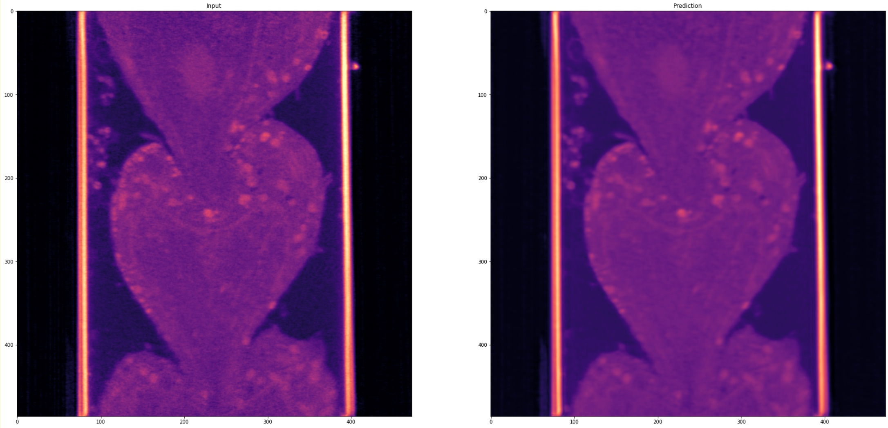

Denoising Module
The denoising module provides Noise2Void (N2V) based denoising capabilities for microscopy images, offering state-of-the-art self-supervised denoising without requiring clean reference images.
N2V Denoising Functions
Main Denoising Function
Model Loading Function
{kind=link}

Features
Self-supervised Learning: N2V trains on noisy data without requiring clean reference images
3D Processing: Optimized for volumetric microscopy data
Tiled Processing: Handle large images through intelligent tiling
Pre-trained Models: Ready-to-use models for common microscopy applications
Example Usage
Basic Denoising:
import numpy as np
import mrcfile
from ipa.processing.denoising import N2V_denoise
# Load your noisy image
with mrcfile.open('noisy_volume.mrc') as mrc:
noisy_image = mrc.data
# Simple denoising with auto-loaded model
denoised_image = N2V_denoise(noisy_image)
# Save result
with mrcfile.new('denoised_volume.mrc', overwrite=True) as mrc:
mrc.set_data(denoised_image.astype(np.float32))
Visualization:
import matplotlib.pyplot as plt
# Visualize results (middle slice)
slice_idx = noisy_image.shape[0] // 2
plt.figure(figsize=(12, 5))
plt.subplot(1, 2, 1)
plt.imshow(noisy_image[slice_idx], cmap='magma')
plt.title('Original (Noisy)')
plt.colorbar()
plt.subplot(1, 2, 2)
plt.imshow(denoised_image[slice_idx], cmap='magma')
plt.title('Denoised')
plt.colorbar()
plt.tight_layout()
plt.show()
Usage with Custom Model:
from ipa.processing.denoising import load_n2v_model
# Load specific pre-trained model
model = load_n2v_model(
model_name='n2v_3D',
basedir='/path/to/models/'
)
# Denoise with custom tiling for large volumes
denoised_image = N2V_denoise(
image=noisy_image,
model=model,
n_tiles=(2, 4, 4) # Adjust based on GPU memory
)
Performance Tips
Memory Optimization:
Use appropriate
n_tilesparameter for large imagesTypical values:
(1, 2, 2)for small volumes,(2, 4, 4)for large volumesHigher tiling reduces memory usage but may increase processing time
Model Selection:
n2v_3D: General purpose 3D denoising model- Custom models can be loaded by specifying
basedirparameter logger.file_in(input_file)
logger.step(“Performing denoising…”) denoised_img = N2V_denoise(img)
# Save results output_file = ‘data/denoised_volume.mrc’ os.makedirs(os.path.dirname(output_file), exist_ok=True)
- with mrcfile.new(output_file, overwrite=True) as mrc:
mrc.set_data(denoised_img.astype(np.float32))
logger.file_out(output_file) logger.step(“Denoising completed successfully!”)
# Visualize results visualize_results(img, denoised_img)
- Custom models can be loaded by specifying
Advanced Usage with Custom Model:
# Load specific pre-trained model
model = load_n2v_model(
model_name='n2v_3D',
basedir='/path/to/models/'
)
# Denoise with custom tiling for large volumes
denoised_image = N2V_denoise(
image=noisy_image,
model=model,
n_tiles=(2, 4, 4) # Adjust based on GPU memory
)